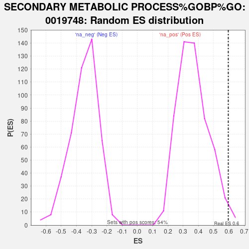

| | | Dataset | er_ranks |
| Phenotype | NoPhenotypeAvailable |
| Upregulated in class | na_pos |
| GeneSet | SECONDARY METABOLIC PROCESS%GOBP%GO:0019748 |
| Enrichment Score (ES) | 0.59642345 |
| Normalized Enrichment Score (NES) | 1.626887 |
| Nominal p-value | 0.016574586 |
| FDR q-value | 1.0 |
| FWER p-Value | 1.0 |
Table: GSEA Results Summary
 Fig 1: Enrichment plot: SECONDARY METABOLIC PROCESS%GOBP%GO:0019748
Fig 1: Enrichment plot: SECONDARY METABOLIC PROCESS%GOBP%GO:0019748
Profile of the Running ES Score & Positions of GeneSet Members on the Rank Ordered List

Fig 2: SECONDARY METABOLIC PROCESS%GOBP%GO:0019748: Random ES distribution
Gene set null distribution of ES for SECONDARY METABOLIC PROCESS%GOBP%GO:0019748